I have made my living betting football for a long time, and I want to tell you the thing nobody tells beginners: the model is not the product. The price is the product.
Sportsbooks post a line, say Buffalo −3.5. That line is the market's best guess at a number that makes both sides equally likely, and the books charge you a fee on every bet (the "vig") whichever side you take. If you bet at random you lose the fee, slowly, forever. To win, you need one of two things: either you know the true probability better than the market does (an edge from information), or you find a book charging a better price than the market's true number (an edge from shopping). The second is far more common, far more reliable, and it is where almost all of my money has come from.
This board was built by someone who understood that. It has a model that projects every game, and the model is respectable: over 3,403 NFL games since 2014 it misses the final margin by 10.02 points on average, against 9.91 for the closing line. Close, but not better. "About as accurate as the market" does not pay the vig, and the board does not pretend otherwise. It measures how much of the model's claimed edge has ever turned into money and sizes the bets from that. On the NFL board the answer today is none: over 2,325 graded bets from 2018 to 2025 the model claimed +4.9% and returned −2.2%. So on the NFL board the model's own opinion carries no stake at all. In college it is about half (52%), and the college model's bets are sized at half strength.
Three places, and the board is built around them in this order:
Everything else on the page, including the model's own leans, is information. Useful, honest information, but not a bet.
Everything on these boards is built from a handful of formulas. You do not need to compute them, but you need to know what they mean.
| −110 | Risk 110 to win 100. Implied chance = 110 / (110 + 100) = 52.4%. This is the break-even for a standard spread bet. |
| +150 | Risk 100 to win 150. Implied chance = 100 / (150 + 100) = 40.0%. |
| −200 | Risk 200 to win 100. Implied chance = 66.7%. |
A book quotes both sides of a spread at −110. Each implies 52.4%, together 104.8%. The extra 4.8% is the book's margin. Remove it and you have the no-vig (fair) chance: 50% each. When the board says "Pinnacle's no-vig number" it means Pinnacle's two prices with the margin taken out, which is the market's honest estimate of each side's chance.
EV per dollar = chance of winning × profit if you win − chance of losing × stake. At −110 with a true 55% chance: 0.55 × 0.909 − 0.45 × 1 = +5.0%. The board shows EV two ways:
Kelly is the stake that grows a bankroll fastest for a given edge: edge divided by the net odds. Full Kelly is far too aggressive when your edge estimate is uncertain, so the board uses quarter Kelly, and caps it three ways:
| Per bet | 3% of bankroll. |
| Per game | 5%, all sides together. If a game's bets add to more, every stake in that game shrinks by the same factor. |
| Per week NEW | 10%, everything on the sheet that week together, scaled the same way. On October 31 the college Week 9 sheet added to 11.2%, so every college stake was scaled to 89% of its size and the sheet says so. The NFL Week 8 sheet came to 6.4%, under the cap. |
Stakes are shown in dollars at the bankroll in the box at the top of the Games page (default $1,000) and as a percentage. Change the box to your bankroll and every stake on the site follows.
The model's chance is not used as is. Each Tuesday (NFL) and Monday (college) the full backtest measures the share of the model's claimed edge that turned into realized profit over the last eight seasons. The stake is sized from the model's chance shrunk toward the market's by that share. NFL: 0%, so the model's own bets carry no stake. College: 52%. If the measurement is missing, the board sizes nothing rather than everything (it "fails closed").
Opener and wind bets do not need the model to be right; they rest on their bucket's own record. When the model sizes nothing for one of them, the board sizes a bucket stake: quarter Kelly on Pinnacle's chance for that side at the book's own line and price, plus the bucket's edge over a fair line (its win rate shrunk halfway to break-even, less 50%). Two details matter NEW:
A 6-point teaser moves the line 6 points your way on every leg, and every leg must win. A two-leg teaser at −120 breaks even when each leg wins √(120/220) = 73.9%. The board prices each leg's chance off the market's own key-number curve (no model) and marks those that clear. Wong legs are NFL sides that a 6-point tease carries across both 3 and 7: favorites of −7.5 to −8.5 (teased to −1.5 to −2.5) and underdogs of +1.5 to +2.5 (teased to +7.5 to +8.5). They are the classic teaser legs; price them, do not bet them by rule.
Kalshi is an exchange. Its prices are contract prices in cents, and it charges a fee: about 7% × p × (1−p) per contract to take a price, 1.75% to rest an order. The board converts every Kalshi price to an effective American price net of the fee ("net") before any EV. Where a resting order would be worth posting, the board says "Post on Kalshi at X¢": the highest price at which a maker order is still +EV. NEW That price is now computed against the chance the stakes are sized from, which on the NFL board is Pinnacle's own number. A resting order may never fill.
The Games page opens with a week picker, the "Price bets from" switch (leave it on Market-adjusted), your bankroll, and then the Bet sheet: every bet the board would place this week, grouped by what the edge is made of.
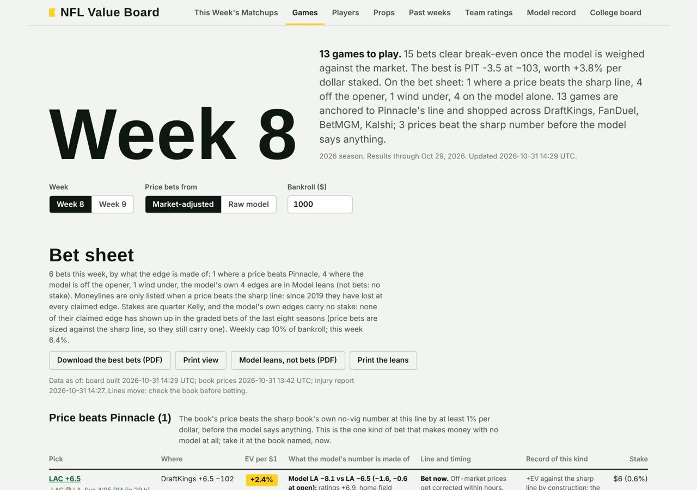
The top of the NFL Games page on October 31. The headline counts the week's games and bets; the Bet sheet's note says how many bets of each kind there are, that the model's own four edges are in Model leans, and how much of the weekly cap this week uses (6.4% of 10%).
| Download the best bets (PDF) | The week's card as a PDF, rebuilt with every board update (section 7). |
| Print view | The same card in the browser, at your bankroll and selected week. |
| Model leans, not bets (PDF) NEW | What the model thinks that is not a bet: on the NFL board the model's own edges, and every game's lean (section 7). |
| Print the leans NEW | The leans document in the browser. |
Below the buttons, the Data as of line says when the board was built and how old the book prices, injury report and designations are. Read it every time. A price is only as good as its timestamp.
| Tier | What it means | Its record |
|---|---|---|
| Price beats Pinnacle | A retail price beats Pinnacle's no-vig number at that line by 1% or more per dollar, with no model. Take it now at the book named. | +EV against the sharp line by construction. |
| Model off the opener | The model is 2+ points off the opening spread (3+ on totals; college: totals only) and the market has not taken it yet. | NFL spreads 2+: 54.5%, +4.0% on 982 bets (+4.0% on 616 since 2019). |
| Wind unders (NFL) | An outdoor under in 10–19 mph of forecast wind, while the total has not already dropped 1.5 points. | 498-379-9 since 2014 (56.8%, +10.4% ± 3.2%); 2019 on: 238-164 (59.2%). |
| Model edges | Everything else the market-adjusted projection makes +EV. College board only now: on the NFL board these carry no stake and are in Model leans. | Shown on every row. |
Moneylines appear only in the price tier. On the graded bets since the holdout seasons began, model-picked moneylines have lost at every claimed edge.
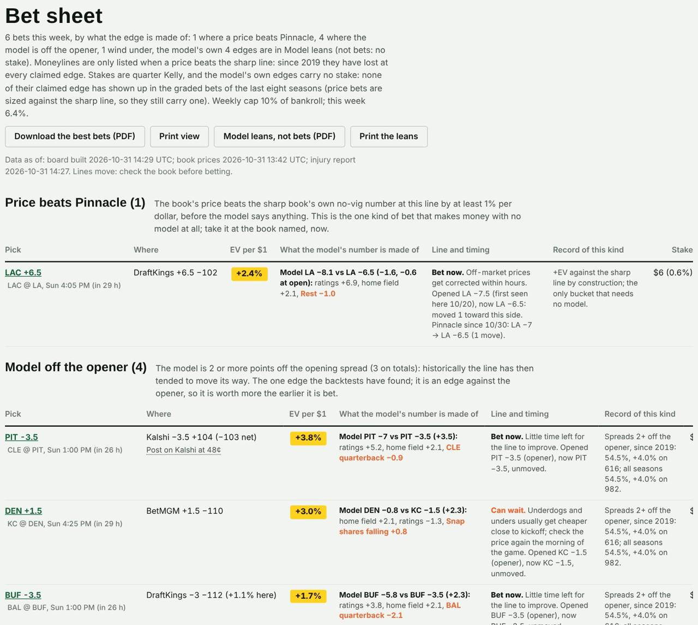
The NFL Bet sheet on October 31: one price bet, four opener bets and one wind under.
| Pick | The side and line, the game, the kickoff and how far away it is. |
| Where | The book to bet at, its line and price (and the net price after Kalshi's fee). For a price bet, the book that beats Pinnacle; for a bucket bet, the book with the best price against Pinnacle; otherwise the best book. "Post on Kalshi at X¢" when a resting order is worth placing. |
| EV per $1 | For a price bet, EV against Pinnacle's no-vig chance ("vs sharp"); otherwise against the model. |
| What the model's number is made of | The model's line against the market, the gap now and at the open, and the three biggest pieces of the number. Red pieces are this week's news (quarterbacks, injuries, snaps, wind) rather than the season's ratings. |
| Line and timing | The verdict (below), where the line opened, where it is now, and Pinnacle's path since it opened. |
| Record of this kind | How this bucket has done in the backtest and, once graded, live. |
| Stake | Dollars and share of bankroll, after the bet, game and week caps. "(bucket)" means it was sized from the bucket's record, not the model. |
| Verdict | When |
|---|---|
| Bet now | A price bet (off-market prices are corrected within hours); an opener bet whose line is moving the model's way; a wind under (totals drop as the forecast firms) NEW; a favorite or over more than 36 hours out. |
| Missed NEW | The market has moved to the model, or the total has already dropped for the wind. The edge at the opener is mostly gone. The teaser leg (section 4) is the way in, if it clears. |
| Check the price NEW | A price bet built on book prices more than 3 hours old. The row is greyed. Take it only if the book still shows that price or better. |
| Can wait | An underdog or under (not a wind under) more than 24 hours out: those usually get cheaper close to kickoff. |
| Wait, or size down | The line has gone a point or more against the model since the open: the market disagrees. |
| Now or never | Under six hours to kickoff. |
LAC +6.5 at DraftKings −102 (price tier, +2.4% vs Pinnacle, $6 at $1,000): a pure price play. DraftKings is paying more than the sharp market says LAC +6.5 is worth. I take it as long as the price is there. The board's prices were from 9:42 AM, so I check the book first.
PIT −3.5, BUF −3.5, DEN +1.5 (opener tier, $9–$15 bucket stakes): the model is 2.3 to 3.5 points off openers that have not moved. These are the bets the backtest says pay. SEA −3.5 has moved half a point, so its stake is a token $1.50. The close-line rate sizes almost nothing.
Under 43.5, NE at MIA (wind, 11 mph gusting 23, $22): bet now, before the total drops.
That is six bets and 6.4% of bankroll. The model's four NFL "edges" (DAL −7.5, IND +10.5, LA −6.5, PHI +6) are in Model leans, and I don't bet them.
Every bet that appears on the sheet is written into the ledger the first time it appears, at that price, and never changed. If the board later changes its mind (a quarterback ruled out, a line that moved to the model), the bet comes off the sheet and the ledger marks it withdrawn. On October 31 the NFL ledger had 25 bets, 13 still on the sheet and 12 withdrawn, most of them by the new "Missed" rule. Section 14 explains why both records are kept.
If the edge is the line moving toward the model, you want to know two things: where the model disagrees with the opener, and how far the market has already come. That is this section.
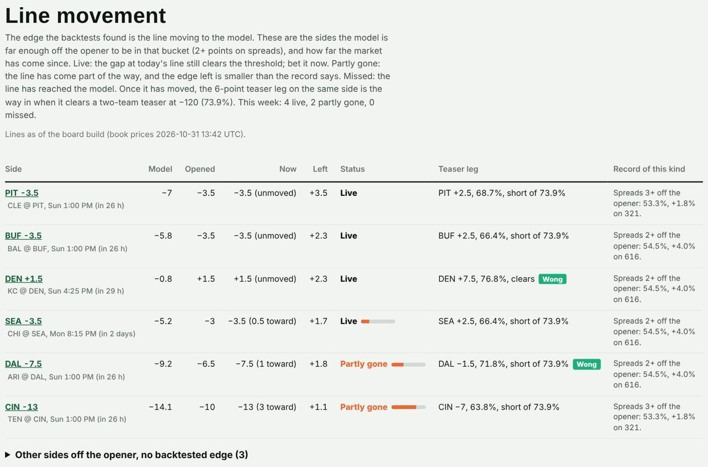
NFL Week 8 Line movement, measured at Pinnacle's line as of 9:42 AM ET on October 31.
| Side | The model's side at today's line, the game and kickoff. |
| Model / Opened / Now | All from that side's point of view: PIT −3.5 with model −7 means the model makes Pittsburgh a 7-point favorite. "Now" says how far the line has moved and which way. |
| Left | The gap still between the model and today's line, in points. |
| Status | Live: the gap at today's line still clears the threshold, or the line has moved no more than half a point. Bet it now. Partly gone: the line has come part of the way; the bar shows how much of the gap is closed. Missed: the line has reached or passed the model. |
| Teaser leg | The same side teased 6 points at today's line, its chance from the market's curve, whether it clears 73.9%, and a Wong tag. |
| Record of this kind | The opener report's row for a gap this size, on the holdout seasons. |
Only sides in a bucket that has made money against the opener on the holdout seasons:
| Board | Market | Threshold | Record at the opener |
|---|---|---|---|
| NFL | Spreads | 2+ points | 54.5%, +4.0% on 616 bets since 2019; 3+: 53.4%, +1.8% on 321 |
| College | Totals | 3+ points | 55.3%, +5.6% on 1,288 bets since 2021 |
| College | Spreads | 5+ points | 54.3%, +3.6% on 735 bets (below 5 points: negative) |
Everything else that is off the opener, such as NFL totals (no graded opening totals yet) and college spreads under 5 points, is folded under "Other sides off the opener, no backtested edge". Read it for what the market is doing, not as bets.
The board's build writes the section, and then every line snapshot re-measures it at Pinnacle's newest line, without a rebuild. The stamp under the heading says which line it used. Snapshots run three times a day, hourly from Sunday evening to Tuesday night (when new lines open), and hourly on game days (section 16).
After every snapshot, any listed side that is new, or whose status changes (Live → Partly gone → Missed), is pushed to your phone through the ntfy app and posted to the "opener-alerts" issue on GitHub, which mentions you so the GitHub app notifies you too. A push reads like this:
NFL DAL -7.5 (ARI @ DAL): model -9.2, opened -6.5, now -7.5 (moved 1 toward); 1.8 left. Partly gone. 6-pt tease to -1.5 (72%, Wong)Setup (done once): install ntfy, subscribe to a private topic name, and save that name (just the name, not the ntfy.sh address) as the repository secret NTFY_TOPIC. The first push after setup lists every current gap; after that you only hear about changes.
New, Live: this is the moment the edge exists. Find the best price on the side (the sheet's Where column, or your books) and bet it.
Live → Partly gone: the market is moving your way. If you already have it, good: that is closing line value. If you don't, the straight bet is worth much less than its record says. Look at the teaser leg.
→ Missed: the line has reached the model. No straight bet. If the teaser leg clears 73.9% (often a Wong leg), it can go into a two-team teaser with another leg that clears.
College volume can be high: on October 31 the college board had 53 live sides in its buckets, far more than a normal week, because the college model disagreed with the market on many games. Treat a very large college gap (the model at 54.6 on a Navy–Army total of 37.5) as a reason to look, not a reason to bet.
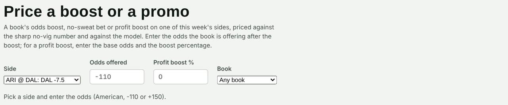
Pick a side, enter the boosted odds the book is offering (or the base odds and a profit-boost percentage), choose a book, and the calculator prices it against Pinnacle's no-vig chance and against the model. A boost that is +EV against the sharp number is the best bet a recreational bettor ever gets. Boosts are capped by the book, so size to the cap, not to the Kelly number.
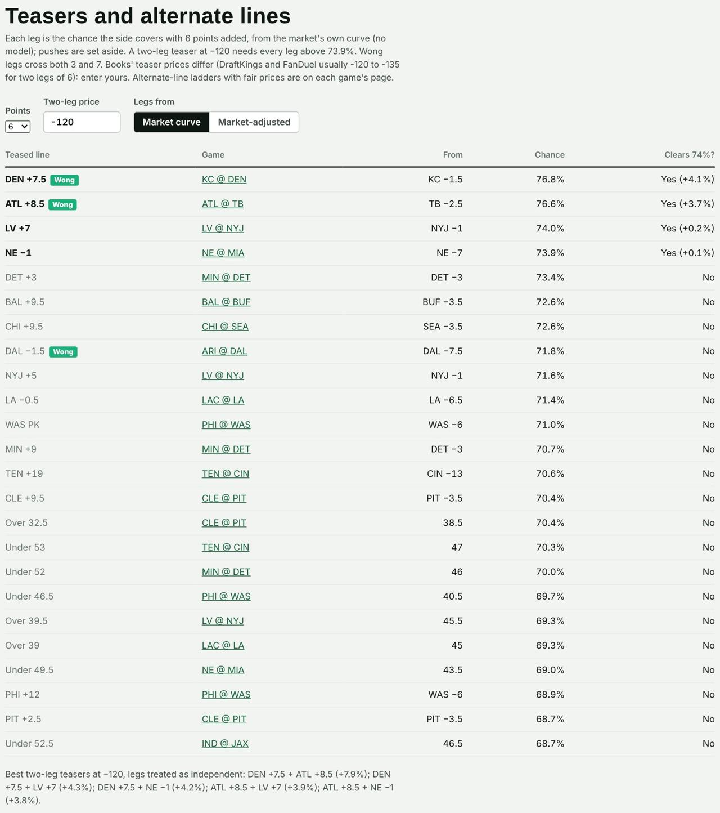
The teaser table on October 31: DEN +7.5 (76.8%) and ATL +8.5 (76.6%) are Wong legs; LV +7 and NE −1 just clear 73.9%.
Choose 6 or 7 points and your book's two-leg price, and every leg is listed with its chance and whether it clears. "Market curve" prices legs with no model, which is the honest default. The table below lists the best two-leg pairs, treating the legs as independent. Two legs from the same game are not independent, and the board never pairs them. Each game's own page has a full alternate-line ladder with fair prices.
How this ties to Line movement: when an opener bet goes Missed, the straight bet is gone, but the side often becomes a good teaser leg, because the line has moved onto or across a key number. That is the "lower odds, tease the line" play.
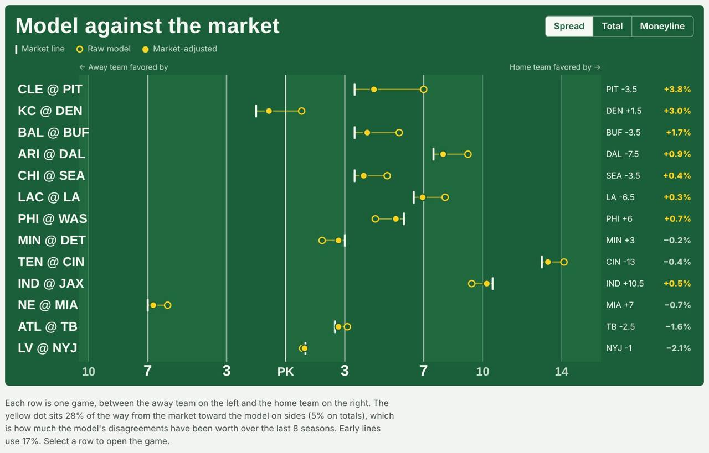
One row per game: the white tick is the market line, the hollow dot the raw model, the yellow dot the market-adjusted projection (28% of the way to the model on NFL spreads, 5% on totals, 17% for early lines). Switch between Spread, Total and Moneyline. The number at the right is the best EV on that market. It is the model's claim, so read it with the haircut.
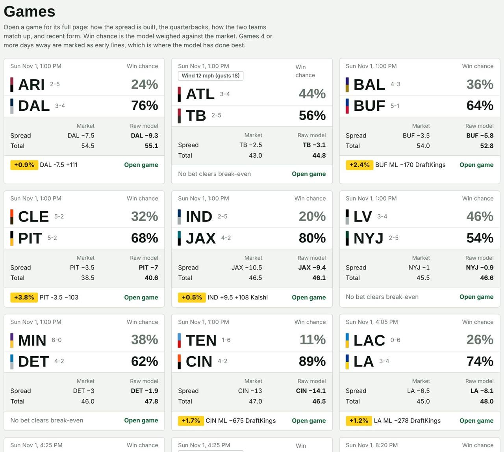
Each card has the win chance (model weighed against the market), the market and raw-model spread and total, wind when it matters, and the single best bet with its book. "No bet clears break-even" is a perfectly good answer. Open a game for everything else.
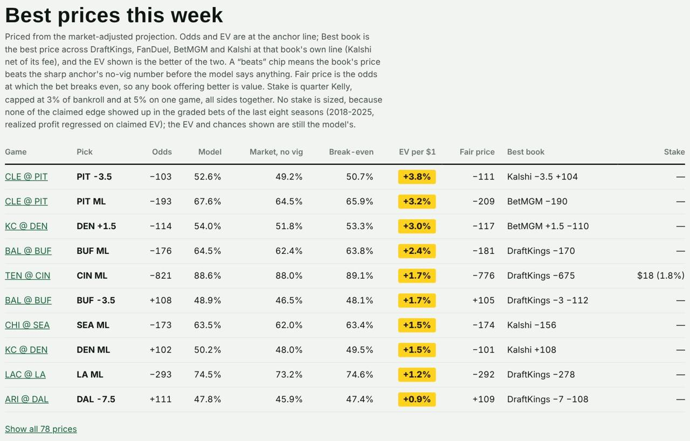
Every side the market-adjusted projection rates +EV, best first: model chance, Pinnacle's no-vig chance, break-even, EV, fair price, best book, and stake. A "beats" chip marks a price that beats Pinnacle on its own. On the NFL board most rows show no stake, because the haircut is 0. This table is the model's view; the Bet sheet is the board's.
The board builds two documents every time it updates, both linked from the Bet sheet and from the landing page.
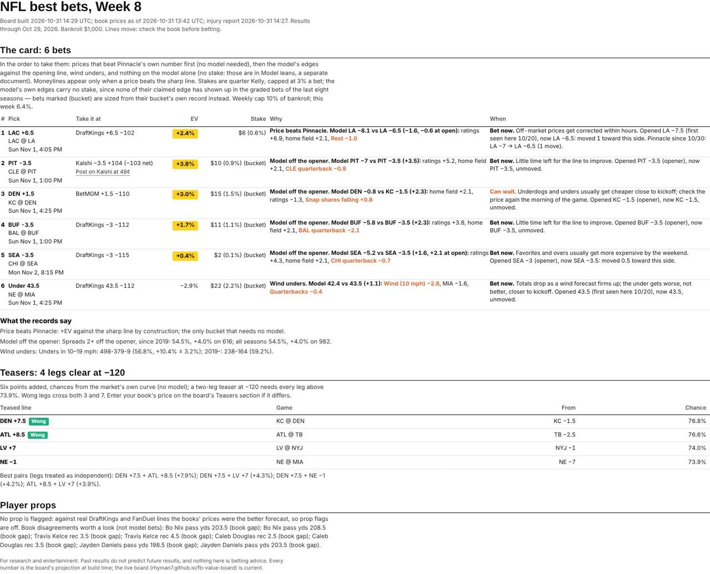
The week's card in the order to take it: every bet on the sheet with the book, price, EV, stake, why and when, then the teaser legs that clear −120 with the best pairs, the week's prop flags (NFL), and the records each kind of bet carries. The header shows when the board was built, how old the prices are, the weekly cap, and once games are graded, the Best Bets record to date. On the NFL board the card no longer includes the model's own edges or every game's lean: the card holds only bets.
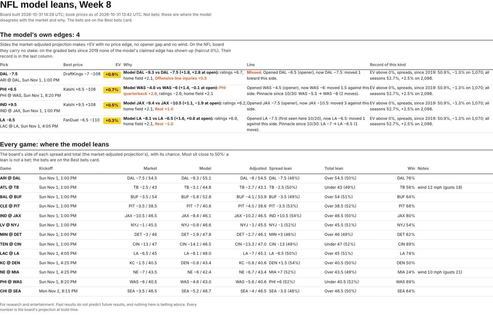
Two parts. On the NFL board, the model's own edges: sides the projection rates +EV with no price edge, no opener gap and no wind. On the graded bets since 2019 none of their claimed edge has shown up, so they carry no stake (model-only NFL spreads: 50.9%, −1.3% on 1,070 bets). They're kept here with their reasons and record. "Missed" marks one the market already moved to. On both boards, every game: where the model leans, with market, raw model and adjusted numbers, the board's side of each spread and total with its chance, the win chance, and notes (early line, wind, no sharp quote).
The PDFs show the board's first listed week at a $1,000 bankroll. The Print buttons print whichever week and bankroll you have selected.
Click any game (a card, a chart row, a pick) to open its page. Using Baltimore at Buffalo, Week 8:
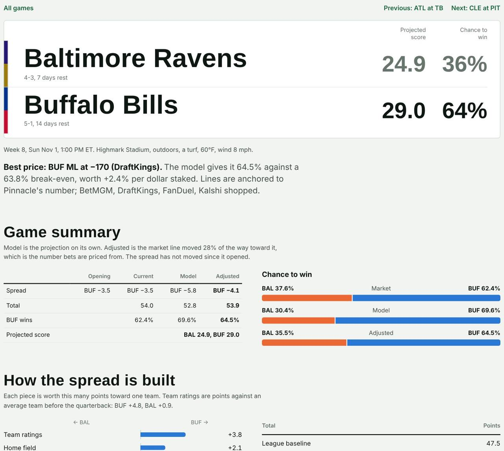
The top of the page: projected scores and win chances, the venue, weather and rest, the best price, and the Game summary.
| Header | Records, rest days, the projected score (24.9–29.0) and the win chance (BUF 64%), with links to the previous and next game. |
| Best price | The single best bet and why, in one sentence. Here, BUF ML at DraftKings −170. |
| Game summary | Opening, current, model and adjusted lines side by side, and the win chance three ways (market, model, adjusted) as bars. |
| How the spread is built | Every piece of the model's number in points: team ratings, home field, rest, each quarterback, offensive line injuries, skill starters out, snap shares. They add up to the model spread, and the same is shown for the total. This is where you check whether a disagreement is real ("BAL quarterback −2.1": Lamar Jackson is playing) or stale. |
| Quarterbacks | Each starter's EPA per dropback over the last eight games, against league average. |
| How they match up | Each offense against the other defense, with league ranks colored (1–6 best). |
| Recent form | Each team's last ten games: margin, result against the spread and the total. |
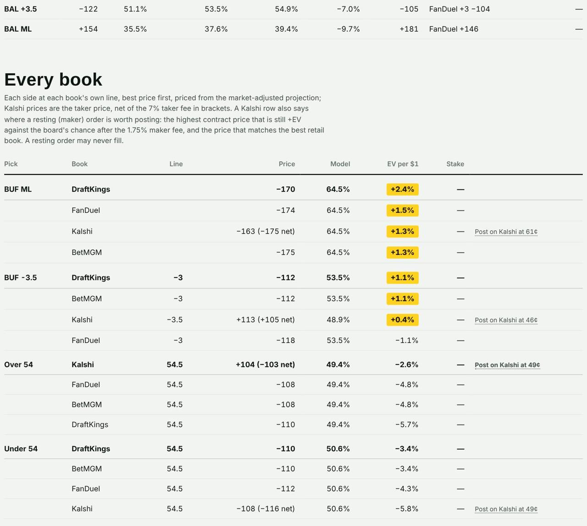
Further down: Every book, each side at each book's own line, best first, with Kalshi's resting-order prices.
| Every price | Each side at the anchor with model chance, no-vig chance, break-even, EV and best book. |
| Every book | Each side at each book's own line, best first, with "Post on Kalshi at X¢" where a resting order is worth it. This is the line-shopping table. |
| Derivatives | Team totals and first-half lines once fetched (NFL: Thursday, Saturday and Sunday mornings; college: Fridays). A derivative is a bet only when a retail price beats Pinnacle's own derivative quote. |
| Alternate lines and teasers | Fair prices at every alternate spread and total within 7 points, from the market's curve and from the projection, and the game's 6- and 7-point teaser legs. |
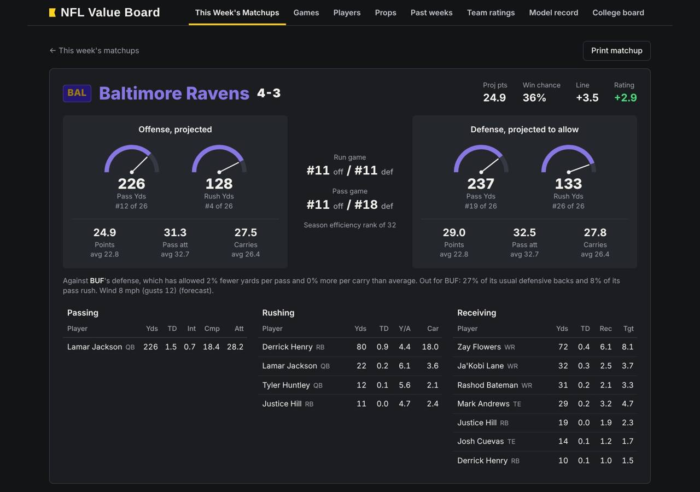
A matchup in the dashboards' dark style: each team's projected offense (passing and rushing yards on dials ranked against the week), what its defense is projected to allow, points, attempts and carries against season averages, and full player projections. The Matchups list shows the week's games with implied scores from the betting line. Past weeks' matchups are reachable from Past weeks. "Print matchup" prints one landscape page. This page is for understanding a game; it does not price bets.
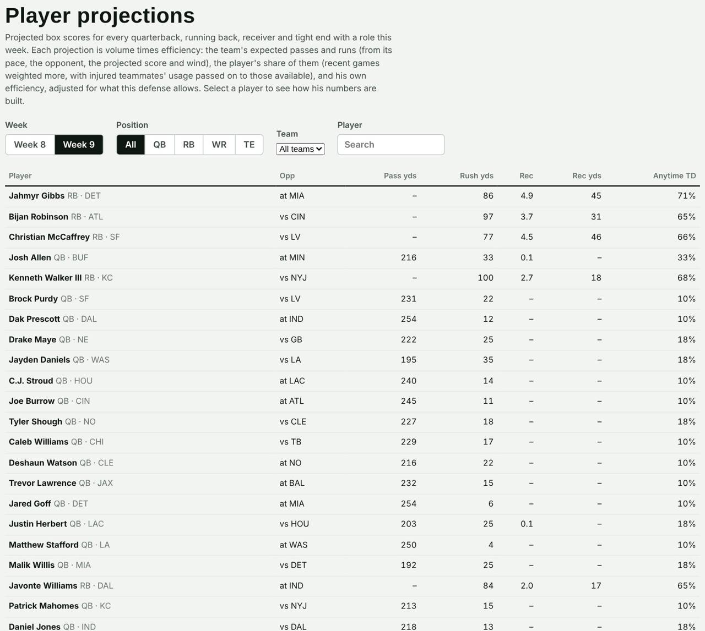
Projected box scores for every quarterback, running back, receiver and tight end with a role this week: pass yards, rush yards, receptions, receiving yards and anytime-touchdown chance. Each projection is volume times efficiency. Volume is the team's expected plays and the player's share of them; efficiency is his own, adjusted for the defense. Players ruled out get no projection. The superscript after a name is his injury designation (Q questionable, P probable; out or doubtful means no projection). Select a player for how his numbers are built.
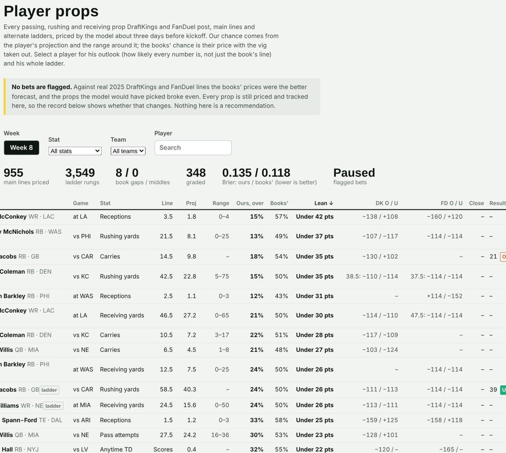
Every DraftKings and FanDuel player prop (main lines and alternate ladders), priced by the projections about three days before kickoff. The banner is the most important part: no bets are flagged. Against real 2025 lines the books' prices were the better forecast (Brier score 0.118 for the books against 0.135 for ours; lower is better), and the props the model would have picked broke even. Every prop is still priced and tracked so that a future change can be measured. Two things here are book error rather than model opinion and are worth a look: a book gap (DraftKings and FanDuel a step apart) and a middle.
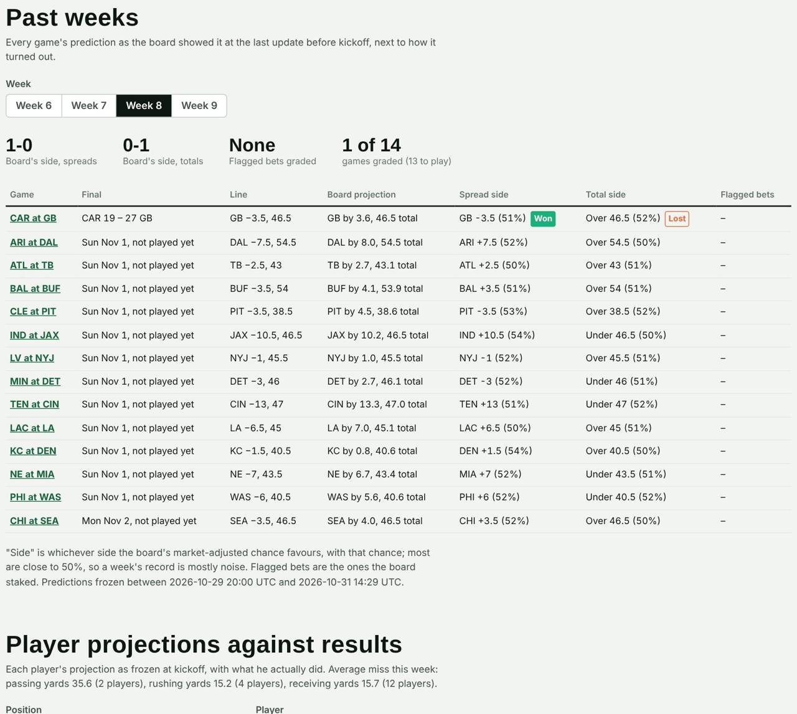
Every game as the board saw it at its last update before kickoff, next to how it turned out: the board's spread and total sides with their chances (won or lost), and the flagged bets. Below that, Player projections against results: each player's projection frozen at kickoff next to his actual line, paired column by column and sortable, with the week's average miss. Season-to-date tables follow. Archived weeks are never rewritten.
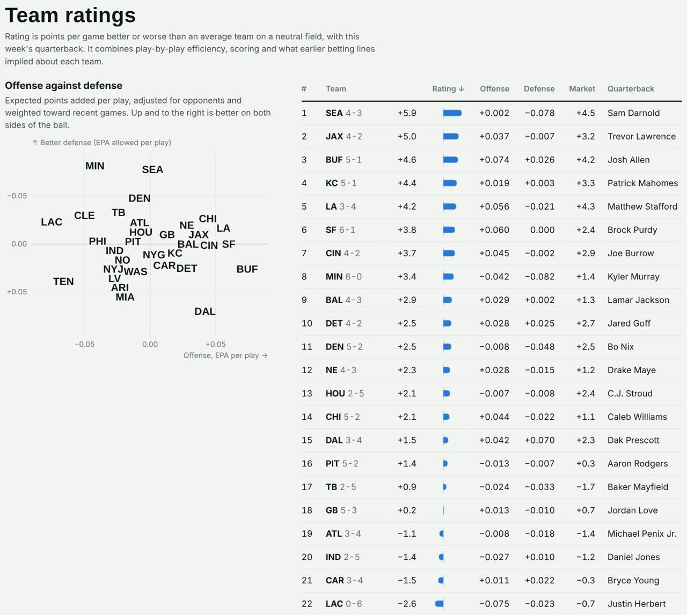
Each team's rating in points against an average team on a neutral field, with this week's quarterback: offense and defense in EPA per play adjusted for opponents, and the rating the betting market implies. The chart puts offense across and defense up; up and to the right is good at both. When the model's rating and the market's differ by a lot, that team drives most of the model's disagreements.
The Model record page now carries three records. They answer three different questions.
| Record | What it counts | The question it answers |
|---|---|---|
| Live record | Every bet the sheet ever flagged, at the first price it was flagged at; graded on the result and on closing line value. | If you acted on the board's first word, how did you do? |
| Best Bets record NEW | Only the bets on the Best bets card as it stood when each game kicked off, at the card's book, line, price and stake. | If you bet the card, how did you do? |
| Track record (the backtest) | Every game since 2014 (NFL) or 2017 (college), projected out of sample and graded at the closing price. | Is the model any good, and which kinds of bets have paid? |
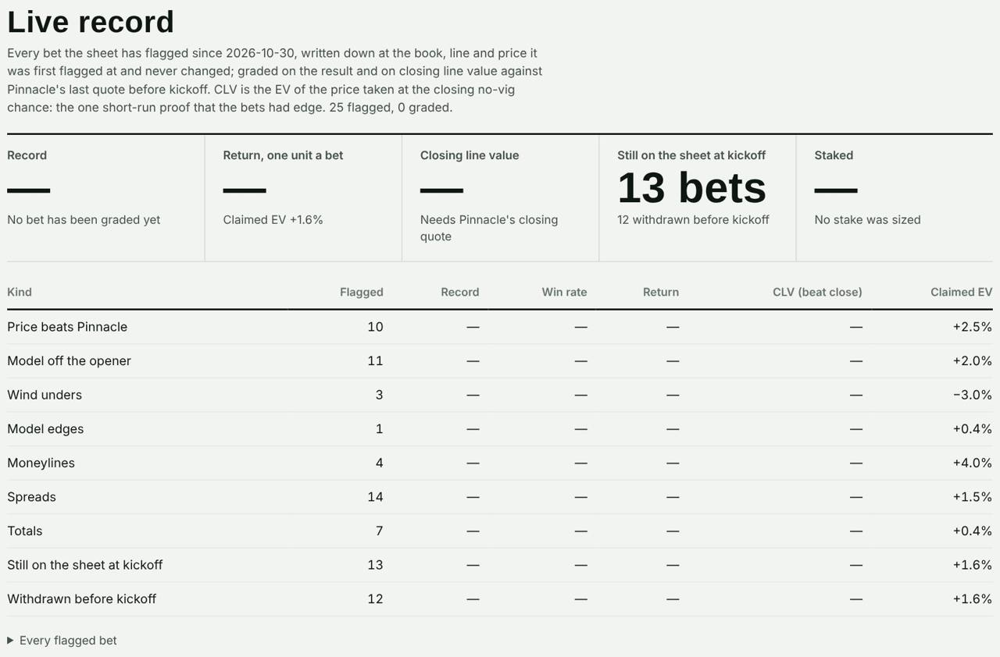
Tiles for the record, return per unit, closing line value and stake, then a row per kind and per market. NEW It now reads both ways: the tile Still on the sheet at kickoff counts bets the board kept to the end, and the table adds rows for kept and withdrawn. Withdrawn bets are labelled in the row list. In a few weeks this tells you whether the board's changes of mind (a quarterback ruled out, a line that moved to the model) are adding value.
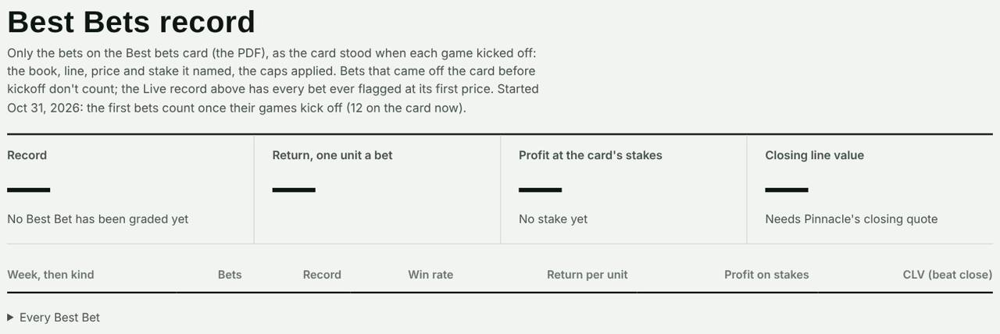
Started October 31, 2026. Each build logs the card: a bet that appears, changes book, line, price or stake, or leaves. When a game kicks off, the last version of its card counts. Tiles show the record, return per unit, profit at the card's stakes (what your bankroll actually did) and CLV. The table shows the record by week, then by kind, and the full list is underneath. The Best bets PDF quotes the record so far in its header.
CLV is the EV of the price you took, measured at the closing no-vig chance. It's the one short-run proof that bets had edge: a bettor who beats the close consistently wins in the long run, whatever this week's results say. Fifty bets won't separate skill from luck on wins and losses; they will on CLV. Price-tier bets should show positive CLV almost every time. Opener bets should show it whenever the line moved toward them, which is the whole idea.
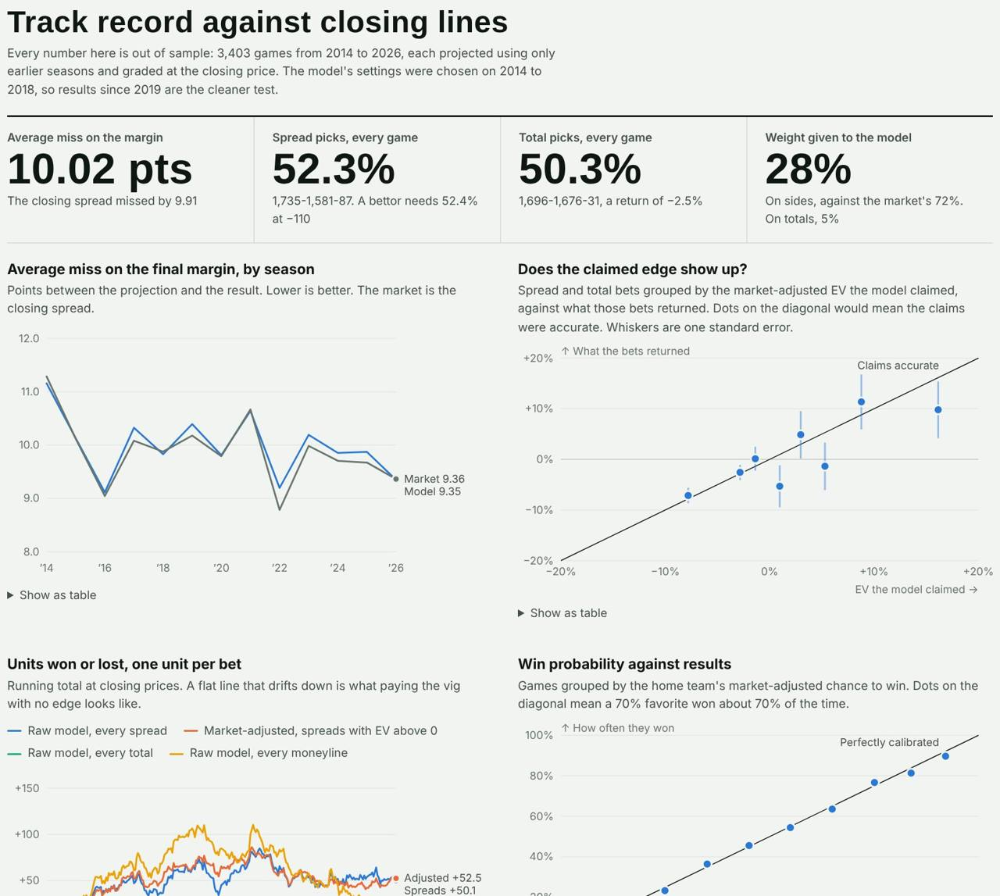
Every number is out of sample: 3,403 NFL games from 2014 to 2026, each projected using only earlier seasons and graded at the closing price. Settings were chosen on 2014–2018, so results since 2019 are the cleaner test. The headline tiles: average miss on the margin 10.02 points (the closing spread 9.91), spread picks every game 52.3%, total picks 50.3%, weight given to the model 28% on sides and 5% on totals. The charts show the miss by season, whether claimed EV showed up (the dots should sit on the diagonal; they mostly don't), units won or lost, and calibration of win chances (which is good).
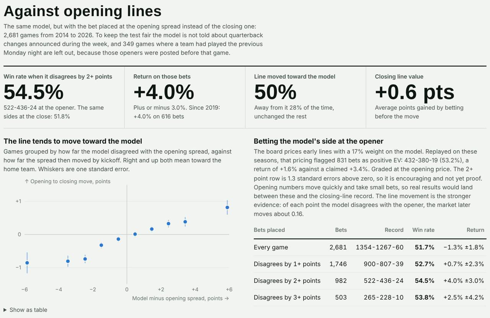
Against opening lines replays the model against the opening spread: 2,681 games, with Monday-night games left out because their openers were posted before the previous week ended. At 2+ points of disagreement the model's side won 54.5% at the opener (522-436-24, +4.0% ± 3.0%; +4.0% on 616 bets since 2019) and 51.8% at the close. The line moved toward the model 50% of the time and away from it 28%. That table is the basis of the opener tier, the Line movement section and the phone alerts. Wind unders shows the 10–19 mph record by era. Key numbers shows how often NFL games land on each margin (3 and 7 above all), which is why a half point through 3 is worth so much and why Wong legs exist.
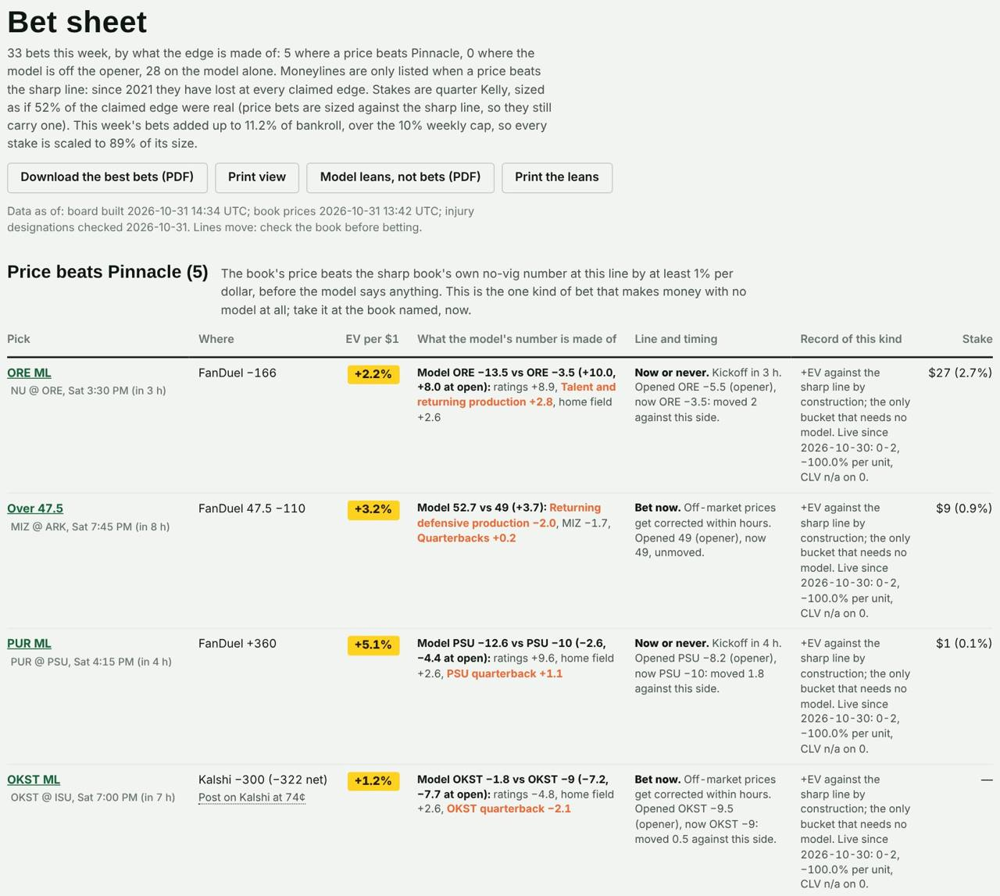
The college Bet sheet on October 31: price bets first, then model edges with real stakes, and a note that Week 9's stakes were scaled to 89% by the weekly cap.
| Haircut 52% | College model edges carry stakes at about half strength (2,434 bets 2018–2025: claimed +3.6%, realized +1.7%). So the Model edges tier stays on the college sheet and the college Best bets card. |
| Opener tier: totals only | College spreads off the opener have lost on the holdout seasons at every threshold below 5 points, so no college spread is ever in the opener tier. College totals 3+ points off the opener: 55.3%, +5.6% on 1,288 bets since 2021. A side marked Missed there means the total has already moved to the model. |
| Line movement | Lists college totals 3+ and spreads 5+ off the opener (735 bets, 54.3%, +3.6%). Expect many more rows than the NFL. |
| No wind tier | The college wind record (53.5%, +2.2% ± 2.3%) is not strong enough to bet on its own. |
| No props | The college board does not price player props. |
| Backtest | 6,918 games from 2017 to 2026; holdout from 2021. Average miss 12.41 against the market's 12.16. |
| Quarterbacks and injuries | College starters come from the CFB dashboard's starter list, and injury designations from Covers.com, checked each morning. |
| Prices | The same five books. Many smaller-conference games have no Pinnacle quote; those use the consensus line, and the card says "no sharp quote". |
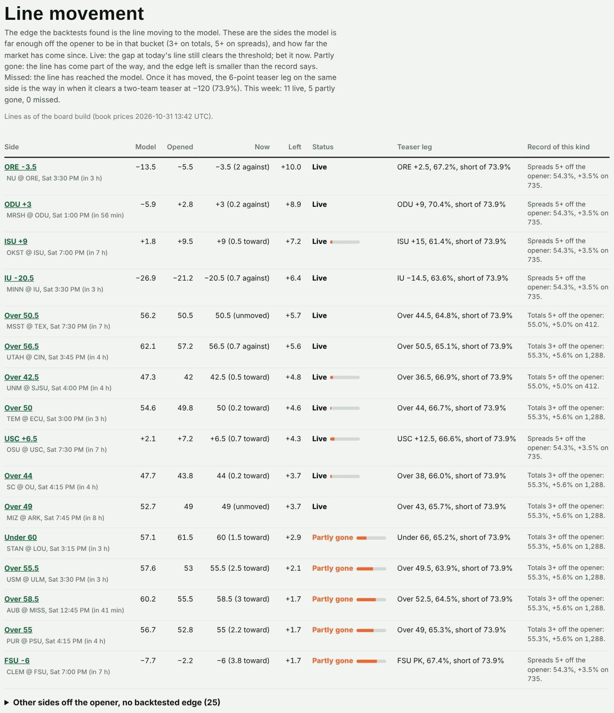
College Line movement, October 31.
| What | When (Eastern) | What it does |
|---|---|---|
| Update board (NFL) | Daily about 7:17 AM; full backtest Tuesdays | Rebuilds the NFL board, ledger, Best Bets record and both PDFs. |
| Update college board | Daily about 8:43 AM, Saturdays also 12:43 and 4:43 PM; full backtest Mondays | The same for college. |
| Market lines | About 10 AM, 4 PM and 10 PM daily; hourly from Sunday evening to Tuesday night | Snapshots Pinnacle, DraftKings, FanDuel, BetMGM and Kalshi; re-measures Line movement; sends the phone alerts. |
| Game-day snapshots NEW | Hourly at :50: college Saturdays 9:50 AM–7:50 PM, NFL Sundays 9:50 AM–4:50 PM, Thursdays 5:50 and 6:50 PM | Snapshots the league playing and rebuilds that board, so prices on the sheet are never much more than an hour old. |
| Derivatives | NFL Thursday, Saturday and Sunday mornings; college Fridays | Team totals and first-half lines. |
| Props | About three days before kickoff | DraftKings and FanDuel props. |
GitHub often starts scheduled runs late, sometimes by an hour or more, so always read the "Data as of" line. Play-by-play and results come from nflverse (NFL) and cfbfastR/CFBD and ESPN (college); injuries from the official NFL report, with hand overrides when the news is ahead of the report. Lines and prices come from The Odds API. Every week's predictions are frozen at kickoff and never rewritten.
Next week's lines open Sunday evening and Monday. The Market lines snapshots run hourly then, and every new gap pushes to your phone. This is the most valuable window of the week. When a push says New, Live, open the Line movement section, check the side's "What the model's number is made of" for stale news, and bet it at the best price. By Tuesday night most of the movement has happened.
Watch for Live → Partly gone pushes on bets you hold. That is closing line value arriving. Check the injury report (it changes the model's number, shown in red) and the Bet sheet after each morning's update. A bet that leaves the sheet is marked withdrawn. That is the board changing its mind, and you should know why before you do anything about it.
A loss on a bet that beat the closing line was a good bet that lost. A win on a bet that the line moved against was a bad bet that won. Review in this order:
Anchor. The book a game's projection is tied to: Pinnacle when it quotes the game, else the consensus.
Best Bets record. The record of only the bets on the Best bets card as it stood at each kickoff (section 14).
Break-even. The win rate a price needs to be worth nothing: 52.4% at −110.
Bucket. A kind of bet with its own record: price, opener, wind, model.
Bucket stake. A stake sized from the bucket's record instead of the model's, at the book with the best price against Pinnacle; "(bucket)" on the sheet.
Check the price. The verdict on a price bet whose quote is more than three hours old.
CLV (closing line value). The EV of the price you took at the closing no-vig chance. Positive means you beat the close.
Close win rate. How the opener bucket's sides did graded at the closing line: 51.8% for NFL spreads 2+, below break-even.
EV. Expected value per dollar staked.
Haircut. The share of the model's claimed edge that has shown up as profit in the last eight seasons; stakes are sized from it. NFL 0%, college 52%.
Kept / withdrawn. Whether a ledger bet was still on the sheet at kickoff, or came off before.
Kelly. The stake that maximizes long-run growth for a given edge; the board uses a quarter of it.
Line movement statuses. Live (the gap still clears the threshold, or the line has moved no more than half a point), Partly gone (the line has come part of the way), Missed (the line has reached the model).
Market-adjusted projection. The market's line moved part of the way toward the model (28% on NFL spreads, 5% on totals, 17% for early lines). Every bet is priced from it.
Missed. An opener bet the market has already moved to, or a wind under whose total has already dropped 1.5 points.
Model leans. The document of the model's opinions that are not bets (section 7).
No-vig. A price with the book's margin removed: the market's estimate of the true chance.
ntfy. The phone app that receives the line-movement pushes; the topic name is the repository secret NTFY_TOPIC.
Opener. The first line posted for a game. The board uses the data's opener (nfelo for the NFL, cfbfastR for college), the number the bucket was backtested on, then Pinnacle's first stored quote, then the first line the board saw.
Pinnacle. The sharp book every price is judged against.
Post at. The highest Kalshi contract price at which a resting (maker) order is still +EV against the chance the stakes are sized from.
Price tier. A retail price that beats Pinnacle's no-vig number by 1% or more, with no model.
Raw model. The model's projection before it is weighed against the market.
Teaser. A parlay with every line moved in your favor; two legs of 6 at −120 need each leg above 73.9%.
Vig. The book's margin.
Weekly cap. 10% of bankroll on one week's bets together; above it every stake that week shrinks by the same factor.
Wind under. An outdoor NFL under in 10–19 mph of forecast wind.
Wong teaser. A 6-point teaser leg that crosses both 3 and 7: a favorite of −7.5 to −8.5 or an underdog of +1.5 to +2.5. Price them, do not bet them by rule.
Third edition, written October 31, 2026 from the live boards. Numbers change every day; the explanations do not. For research and entertainment; nothing here is betting advice.